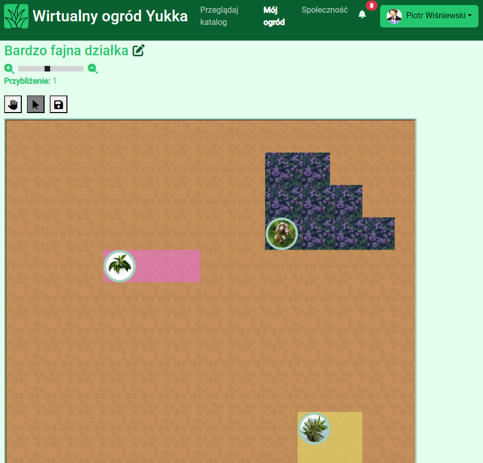
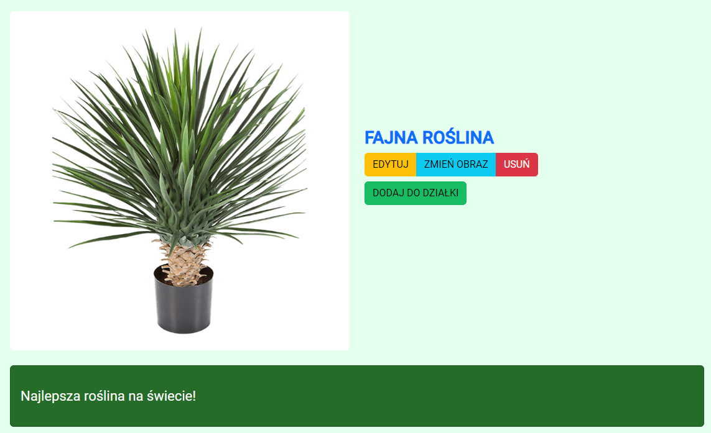

<section>
  <!-- Start: Articles Cards -->
  <div class="container p-5">
    <div class="row mb-5">
        <div class="col-md-8 col-xl-6 text-center mx-auto">
            <h1 class="text-uppercase text-primary">TWÓJ WŁASNY WIRTUALNY OGRÓD</h1>
            <p class="w-lg-50 text-dark fs-5" >Stwórz swój własny ogród z roślinami wybranymi z katalogu, albo zrób własną roślinę</p>
            
        </div>
    </div>
    <div class="row mb-5">
        <div class="col-md-8 col-xl-6 text-center mx-auto">
            <h1 class="text-uppercase text-primary">Dodaj własną roślinę</h1>
            <p class="w-lg-50 text-dark fs-5">Stwórz swoją własną roślinę z wieloma możliwościami modyfikacji!</p>
            
        </div>
    </div>
    <div class="row gy-4 gy-md-0">
        <div class="col-md-8">
            <div class="p-xl-5 m-xl-5">
              
            </div>
        </div>
        <div class="col-md-4 d-md-flex align-items-md-center">
            <div style="max-width: 350px;">
                <h1 class="text-uppercase text-primary">Przeglądaj katalog</h1>
                <p class="my-3 text-dark fs-5">Poznaj wiele gatunków roślin i jak je pielęgnować!</p>
                <a class="btn btn-primary btn-lg me-2" role="button" [routerLink]="['/rosliny']" routerLinkActive="router-link-active" >Przejdź do katalogu</a>
            </div>
        </div>
    </div>
</div><!-- End: Articles Cards -->
</section>
